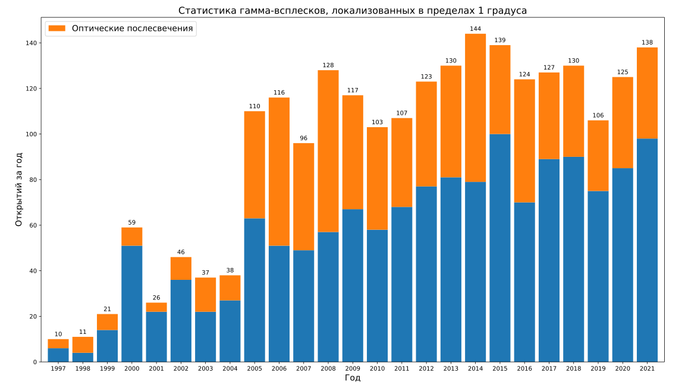

- За 1997 год открыто 10 гама-всплесков, 4 – послесвечений. Всего к концу года открыто 10, 4 – послесвечений.
- За 1998 год открыто 11 гама-всплесков, 7 – послесвечений. Всего к концу года открыто 21, 11 – послесвечений.
- За 1999 год открыто 21 гама-всплесков, 7 – послесвечений. Всего к концу года открыто 42, 18 – послесвечений.
- За 2000 год открыто 59 гама-всплесков, 8 – послесвечений. Всего к концу года открыто 101, 26 – послесвечений.
- За 2001 год открыто 26 гама-всплесков, 4 – послесвечений. Всего к концу года открыто 127, 30 – послесвечений.
- За 2002 год открыто 46 гама-всплесков, 10 – послесвечений. Всего к концу года открыто 173, 40 – послесвечений.
- За 2003 год открыто 37 гама-всплесков, 15 – послесвечений. Всего к концу года открыто 210, 55 – послесвечений.
- За 2004 год открыто 38 гама-всплесков, 11 – послесвечений. Всего к концу года открыто 248, 66 – послесвечений.
- За 2005 год открыто 110 гама-всплесков, 47 – послесвечений. Всего к концу года открыто 358, 113 – послесвечений.
- За 2006 год открыто 116 гама-всплесков, 65 – послесвечений. Всего к концу года открыто 474, 178 – послесвечений.
- За 2007 год открыто 96 гама-всплесков, 47 – послесвечений. Всего к концу года открыто 570, 225 – послесвечений.
- За 2008 год открыто 128 гама-всплесков, 71 – послесвечений. Всего к концу года открыто 698, 296 – послесвечений.
- За 2009 год открыто 117 гама-всплесков, 50 – послесвечений. Всего к концу года открыто 815, 346 – послесвечений.
- За 2010 год открыто 103 гама-всплесков, 45 – послесвечений. Всего к концу года открыто 918, 391 – послесвечений.
- За 2011 год открыто 107 гама-всплесков, 39 – послесвечений. Всего к концу года открыто 1025, 430 – послесвечений.
- За 2012 год открыто 123 гама-всплесков, 46 – послесвечений. Всего к концу года открыто 1148, 476 – послесвечений.
- За 2013 год открыто 130 гама-всплесков, 49 – послесвечений. Всего к концу года открыто 1278, 525 – послесвечений.
- За 2014 год открыто 144 гама-всплесков, 65 – послесвечений. Всего к концу года открыто 1422, 590 – послесвечений.
- За 2015 год открыто 139 гама-всплесков, 39 – послесвечений. Всего к концу года открыто 1561, 629 – послесвечений.
- За 2016 год открыто 124 гама-всплесков, 54 – послесвечений. Всего к концу года открыто 1685, 683 – послесвечений.
- За 2017 год открыто 127 гама-всплесков, 38 – послесвечений. Всего к концу года открыто 1812, 721 – послесвечений.
- За 2018 год открыто 130 гама-всплесков, 39 – послесвечений. Всего к концу года открыто 1942, 760 – послесвечений.
- За 2019 год открыто 106 гама-всплесков, 31 – послесвечений. Всего к концу года открыто 2048, 791 – послесвечений.
- За 2020 год открыто 125 гама-всплесков, 39 – послесвечений. Всего к концу года открыто 2173, 830 – послесвечений.

Ссылки